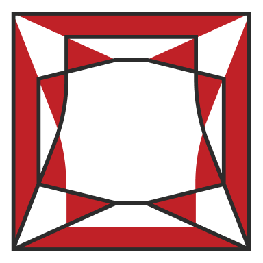
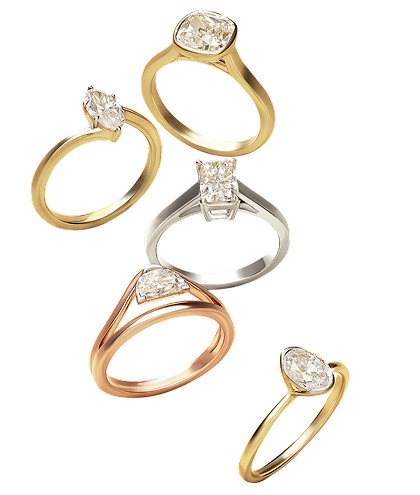

STEP 1:
Pure carbon is chosen and shaped into a thin diamond seed.
If you’ve found yourself wondering what a laboratory-grown diamond is, we’re here to help you understand it in detail.
If you’ve found yourself wondering what a laboratory-grown diamond is,
we’re here to help you understand it in detail.
They look familiar, sparkle the same way, and behave just like natural
diamonds — brilliant and hard. So why the fuss, you ask? Because they
also open up a new kind of freedom.
The freedom to explore bigger ideas, experiment with unexpected shapes,
and indulge your imagination without limits.
They look familiar, sparkle the same way, and behave just like natural
diamonds — brilliant and hard.
So why the fuss, you ask?
Because they also open up a new kind of freedom. The freedom to explore
bigger ideas, experiment with unexpected shapes, and indulge your
imagination without limits.
Explore the tool above to discover the 4Cs and everything that makes
a diamond a diamond.
And while you’re at it, play around with shapes and styles that
are now more accessible than ever.
For billions of years, the earth shaped diamonds deep below the
surface — slowly, silently, under pressures beyond comprehension
It is the world's first lesson in patience, wonder, and
possibility.
Inspired by its poetry and to recreate its brilliance, the mind
innovated
laboratory-grown diamonds
- with the same precision, structure and science - above ground.
Pure carbon is chosen and shaped into a thin diamond seed.
The seed enters a chamber of plasma where atoms begin to build.
Layer by layer, a rough diamond emerges — identical in structure to nature.
Cut, polished, and perfected — the laboratory-grown diamond comes alive in full brilliance.
We gave laboratory-grown diamonds room to stretch, curve, and break
away from the usual forms.
What emerged was distinct, bold, unexpected cuts — shaped by
imagination, not tradition.

Sharp, modern, and bold, the princess cut combines a square shape with strong brilliance. It gives a bright, contemporary look.
Bold edges, bright sparkle


we love helping you find the perfect stone that matches your style, vision, and sparkle goals.
Created with human ingenuity and designed for women to indulge in, everyday.
Shop Unique Cuts